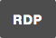
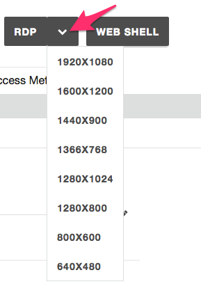

F5 Unified Demo Framework (UDF)¶
Note
This environment is currently available for F5 employees only
Determine how to start your deployment:
- Official Events (ISC, SSE Summits): Please follow the instructions given by your instructor to join the UDF Course.
- Self-Paced/On Your Own: Login to UDF,
Deploy the
Programmability Class 1: Introduction to Automation & OrchestrationBlueprint and Start it.
Connecting to the Environment¶
To connect to the lab environment we will use a Remote Desktop Protocol client to connect to the Jumphost.
Note
We recommend that students open this lab guide on their Jumphost using the Chrome web browser. The browser is configured to open the lab guide as it’s start page.
Connect using RDP¶
In the UDF navigate to your Deployments
Click the Details button for your Deployment
Click the Components tab
Find the
Linux JumphostComponent and click the the Details button.Download the RDP file by completed one of the following:
Full Screen: Click the  button to download an RDP file that will start the RDP session in full screen mode
Specify Resolution: Click the button and select a screen resolution to use for the connection:

If you do not have the official Microsoft Remote Desktop Client, please install it using the instructions at https://docs.microsoft.com/en-us/windows-server/remote/remote-desktop-services/clients/remote-desktop-clients
Warning
If you have a HiDPI display please refer to the Using HiDPI Displays (RDP & Windows) instructions below
Open the RDP file in the Remote Desktop Client and connect. If you have any problems please ask your instructor for help
Select how you would like to continue:
{kind=link}
{kind=link}
Using HiDPI Displays (RDP & Windows)¶
Warning
Do these steps BEFORE you connect via RDP. Choose ONE only. Do not do both.
If you are using Hi Resolution Display on Windows, we recommend that you either:
- RECOMMENDED: Resize your display to 1080p (1920 x 1080) or
- Use your RDP clients “Zoom” functionality to increase the size
Resize your display (Windows 10) - RECOMMENDED¶
Right click on your Desktop and select Display Settings.
Click on Advanced Display Settings
Change the Resolution to
1920 x 1080and click the Apply buttonConnect to the RDP session
Select how you would like to continue:
{kind=link}
{kind=link}
{kind=link}
Use RDP Zoom¶
Right click on the RDP file and click on Edit
Under the Display tab change the resolution to
1920x1080, then click ConnectAfter you connect, access the menu at the top left of your RDP Window and change the Zoom level (i.e. 175%).
Select how you would like to continue:
{kind=link}
{kind=link}
{kind=link}